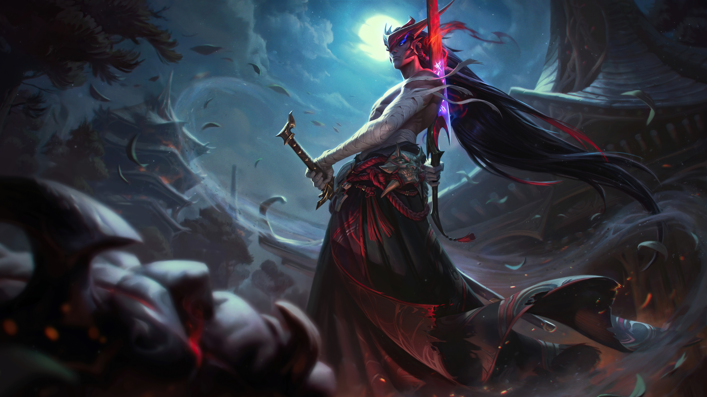
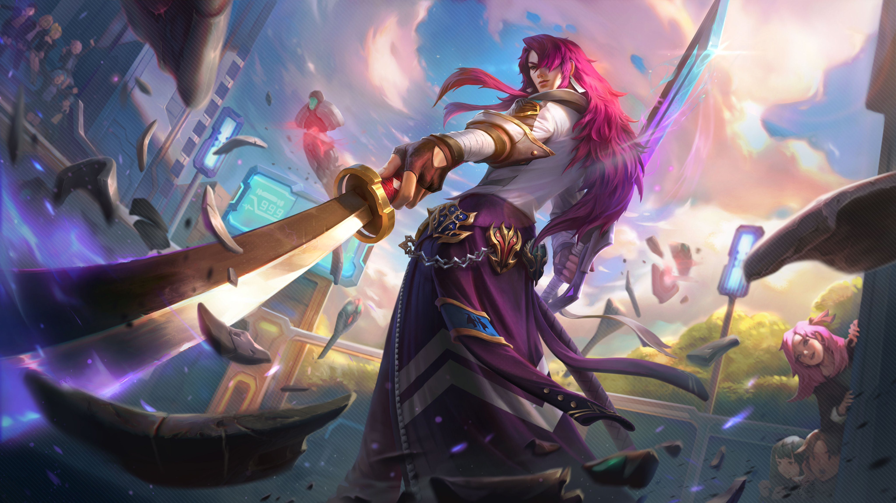
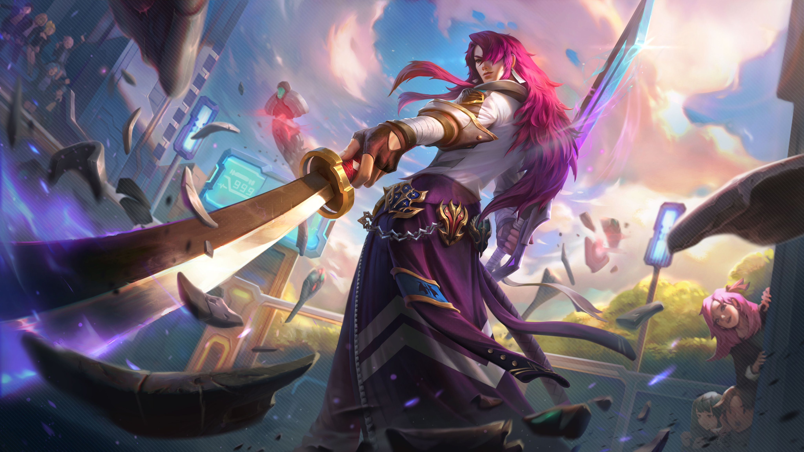
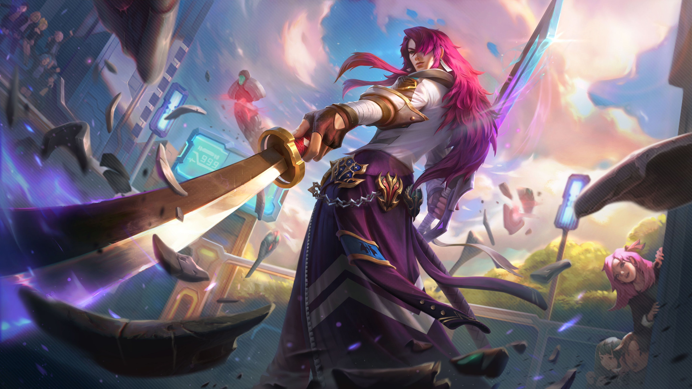
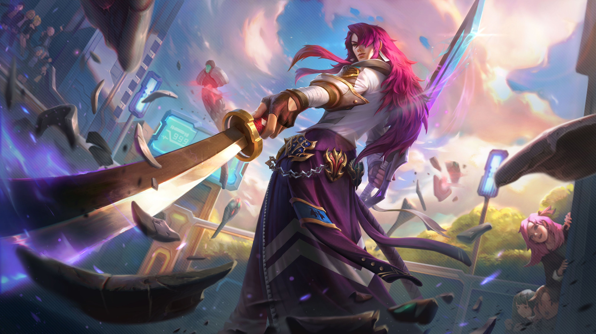
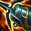
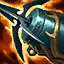

 


封魔剑魂
永恩
- 物理攻击
- 魔法攻击
- 防御能力
- 上手难度

 



- 被动技能狩人之道每第二次攻击时可以对敌人造成50%的魔法伤害，对线一些护甲比较高的英雄具有一定的优势。
- 在18级时，永恩的错玉切只需要从装备中获取 55% 攻击速度，即可到达攻击速度上限。
- 破障之锋可以在技能释放的时候增加移速，当有效时间结束时或者提前结束可以回到释放技能的时候，对于追击敌人或者探视野是一个不错的选择。
- 封尘绝念斩可以可以在任何时候释放，即使当你被控制技能定身时。
- 错玉切的范围非常狭窄。尽可能靠边，就能躲过这招。
- 当永恩的错玉切连续命中两次时，他的下次错玉切就会形成一道旋风。要观察他的增益栏，并且留心聆听相关音效，做好躲避这招的准备。
- 永恩在使用破障之锋之后最为虚弱，可以趁机逼他交战。
- 永恩的封尘绝念斩作用范围是一个矩形范围，尽量左右移动躲技能。